Wool Slippers.

Monday, March 19th 2018.
In "Special Topics in Do-It-Yourself Fabrication," it was revealed that the final project is to create literally anything that brings joy to a person and employs interesting fabrication methods.
I had a few ideas at first, but none that really excited me. Then I thought about the spirit of DIY and the nature of the class. When you don't have the machines or materials that would let you follow a well defined processes to get your product, how do you take the resources around you and Do Something Yourself?
And then it hit me. Like... like when an idea just goes "WHOOSH" through your mind and clears everything else out. I want to make slippers from scratch. I will do the following:
1] Find a farm that sells wool.
2] Go to the farm, get some wool.
3] Fabricate a mold for a slipper.
4] Use wet felting to make the shoe.
And then I will have a local, low cost, super cool looking ultra comfy pair of shoes I made myself. Potential challenges include the fact that I have literally never done any soft fabrication and don't know anything about shoes.
A parallel goals to all this is to bring some friends along on this adventure and see if we can't find some meaning in the experience. I think there's something interesting here; a university setting encourages building high complexity things by making tools and information more accessible (TAs, Arduino, desktop 3D printing, etc...), but a side effect of this is that we don't often engage with the lower levels of abstraction of a project. When I want to build a part, luckily I don't also have to build a computer, CAD software, and a 3D printer. But what does it feel like to build a low complexity good from scratch? Will it feel like engineering? Or more Design, Art, Science?
Maybe this isn't nearly as lofty an idea as it feels like, but at the very minimum, I'll end up with a pair of slippers.
Tuesday, March 20th 2018.
Possible Farms Identified: White Dog Farm or Wild Rose Farms. Both about 30 miles outside of Pittsburgh. Also considering a booth or clog instead or in addition to a slipper.
Wednesday, March 28th 2018.
Submitting project proposal! Have watched like 10 hours of youtube videos on various wet felting methods.
Wednesday, April 25th 2018.
I have ordered some wool from Amazon, as I'm less certain I'll be able to make it to a farm that is nearby with roving for sale during this part of the season.
Friday, May 4th 2018: FINAL PROJECT SUBMISSION
Design inspired by this mood-board.
Intended user inspired by this mood-board
Project pdf here
Final Product Images:
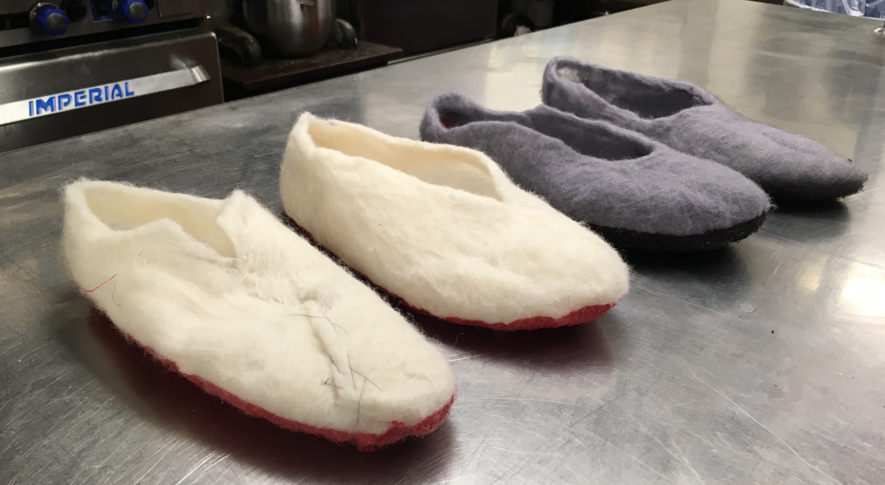
All 4 together I
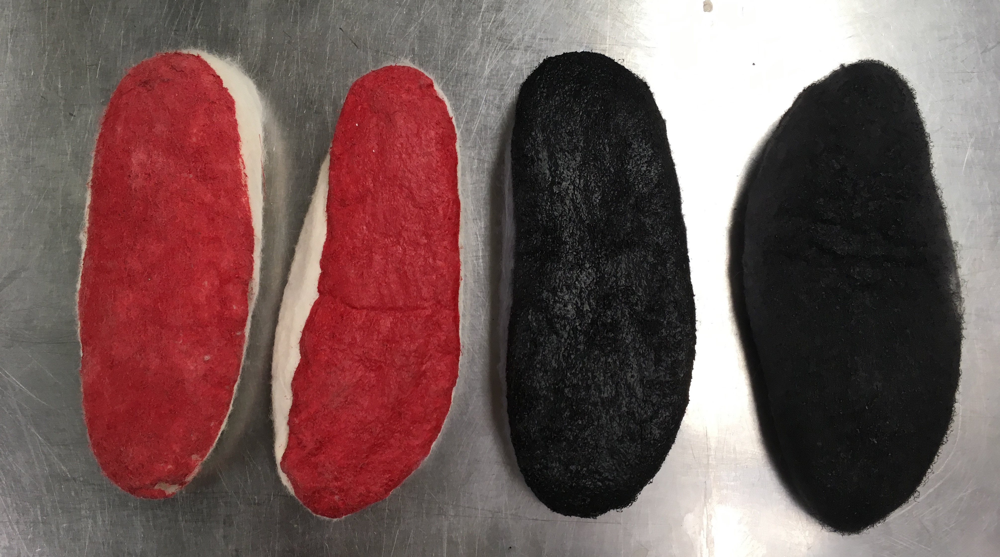
All 4 together II
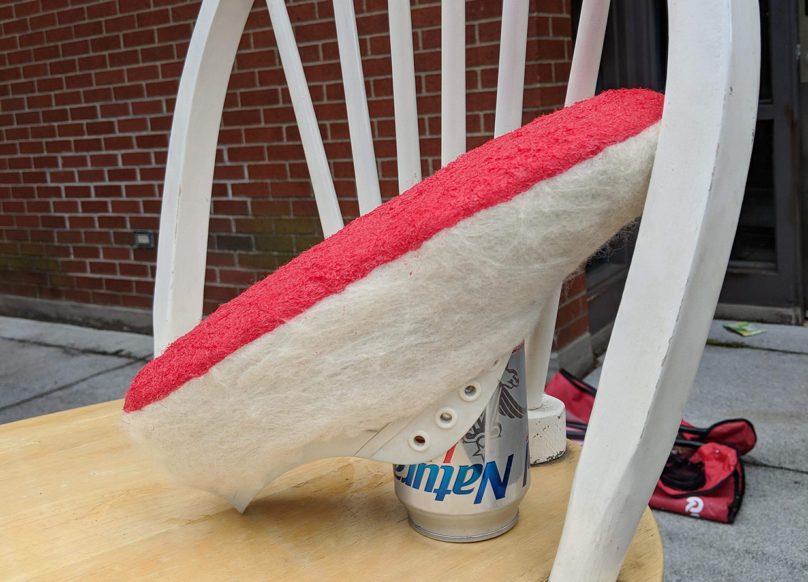
The best one, second iteration I
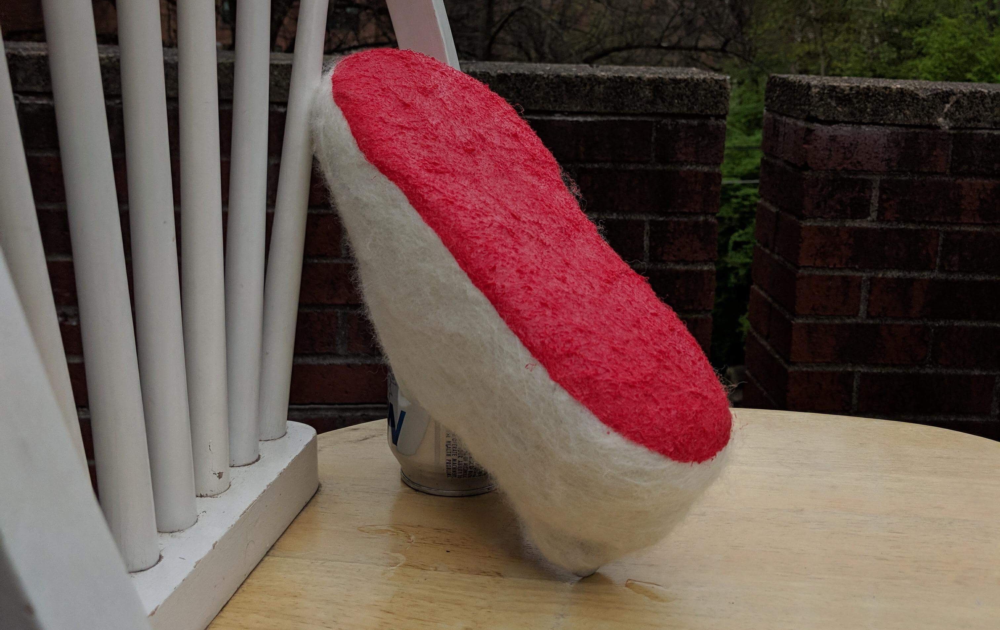
The best one, second iteration II
Process Documentation:
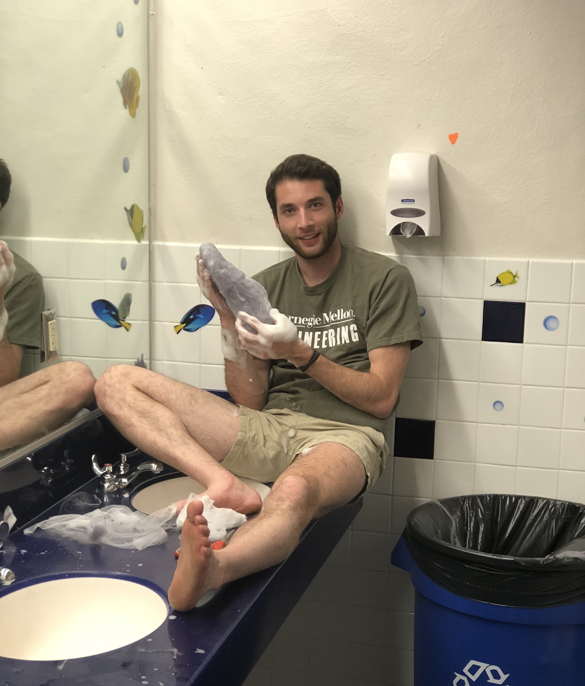
The process employed is called Wet Felting. Essentially, you stack very thin layers of wool roving around a mold (in this case a Croc material shoe), and apply friction and compression to create a singular sheet (or shape) from the many fibers. It takes between 2 and 3 hours per shoe of stacking and rubbing.
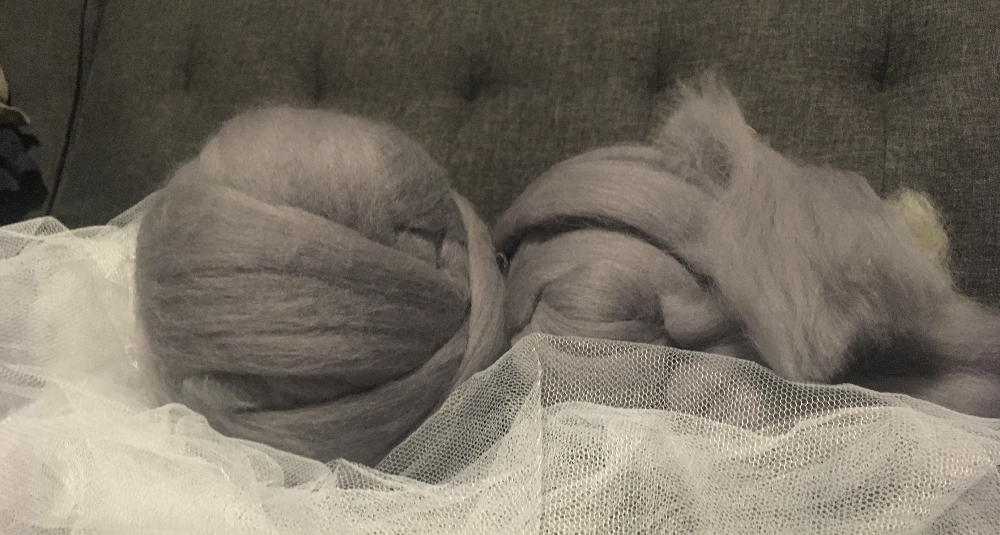
The materials used for wet feling are wool roving, and some material to separate the wool from your hands as you rub. This ensures you don't displace large segments of fiber, just move them around lightly. In this case I used a mosquito net!
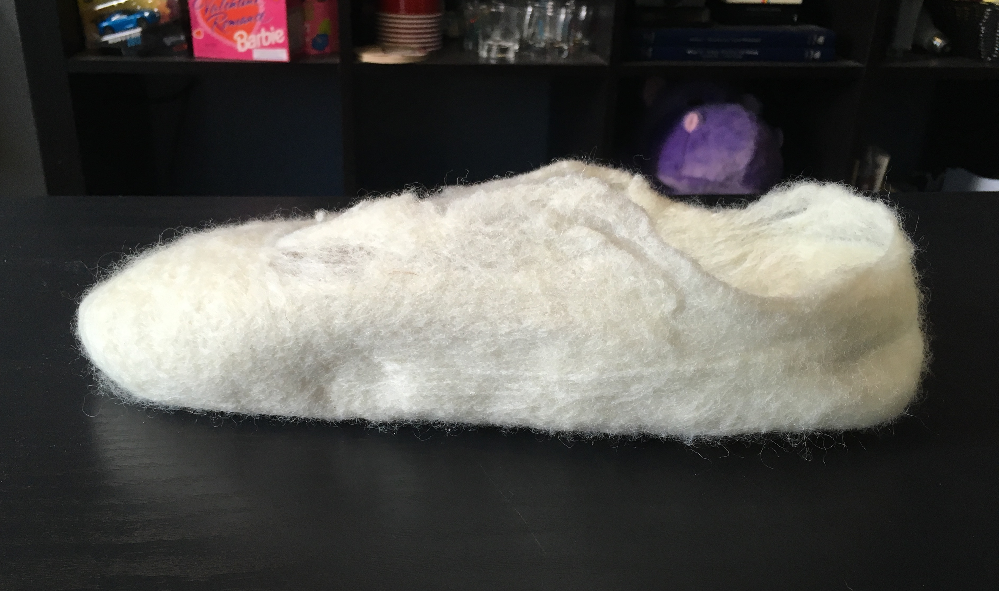
After rubbing, you toss the shoe and wool in a dryer (inside a pillow case, as the wool is still fragile while wet), and remove once fully dry. Here we see the first prototype
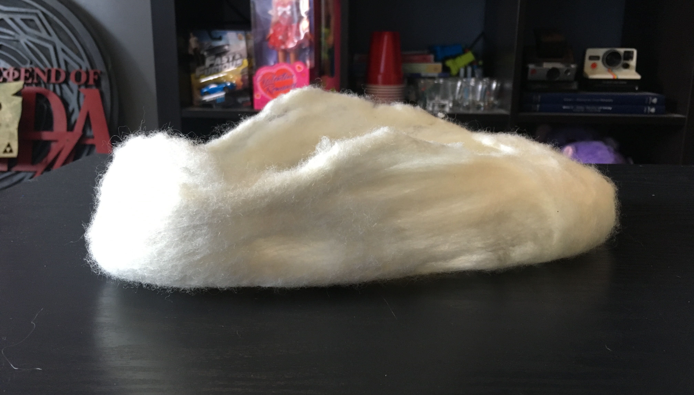
It actually looks and felt pretty nice
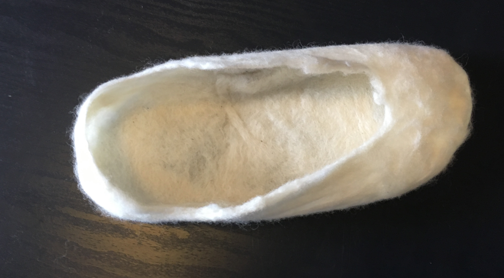
But the shoe-hole shape wasn't quite right. So I tried to adjust with some thread
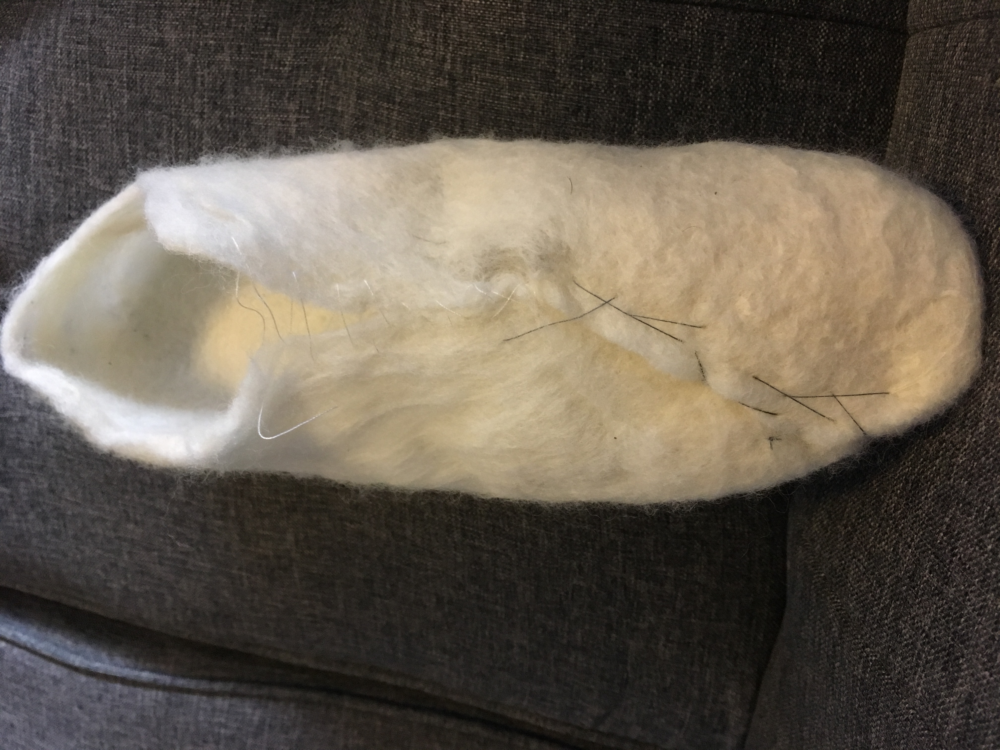
Didn't quite work. On to iteration 2!
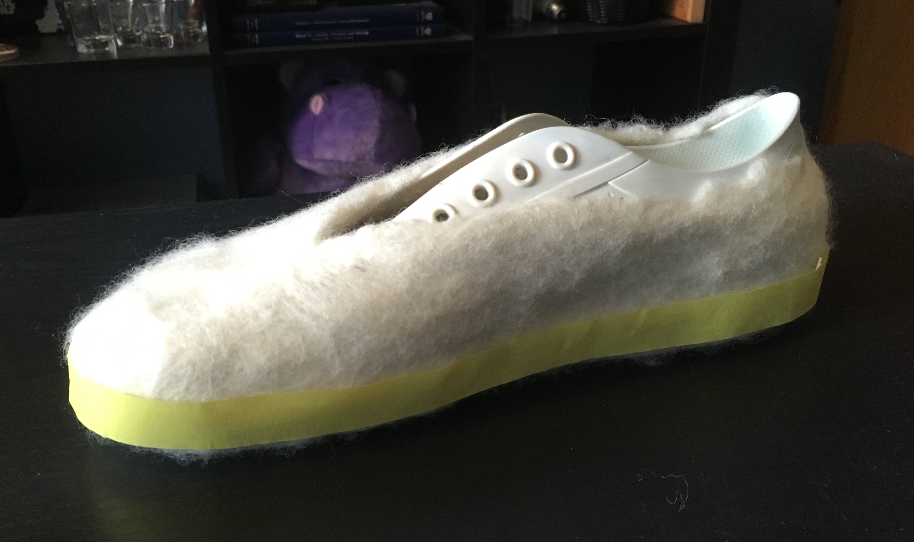
In the second one, i was more intentional with the hole i created on the top of the shoe. I also lined the edges with tape in preperation to paint on a plasti-dip grip.
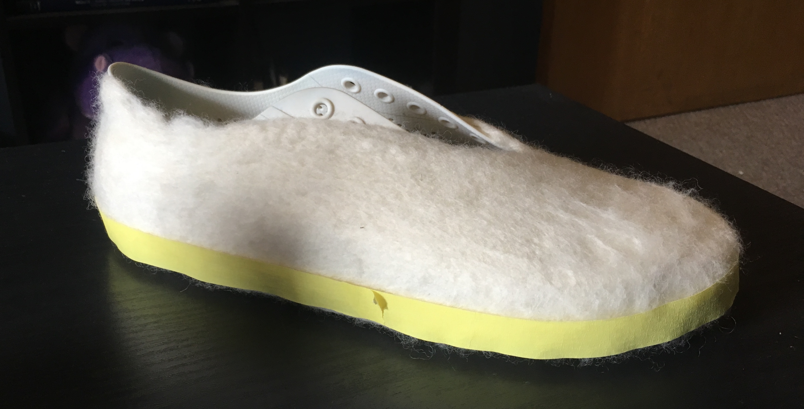
Another angle of iteration 2.
Here is iteration 2 resting outside while the plasti-dip dries
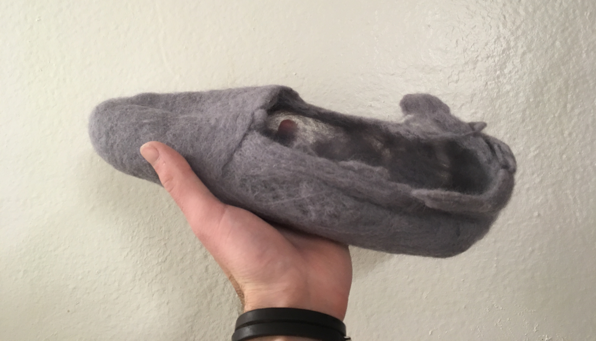
For iteration 3, I wanted to focus on making more a slipper shape and less a clog shape. I used a toms shoe as a mold. It did not work out so well...
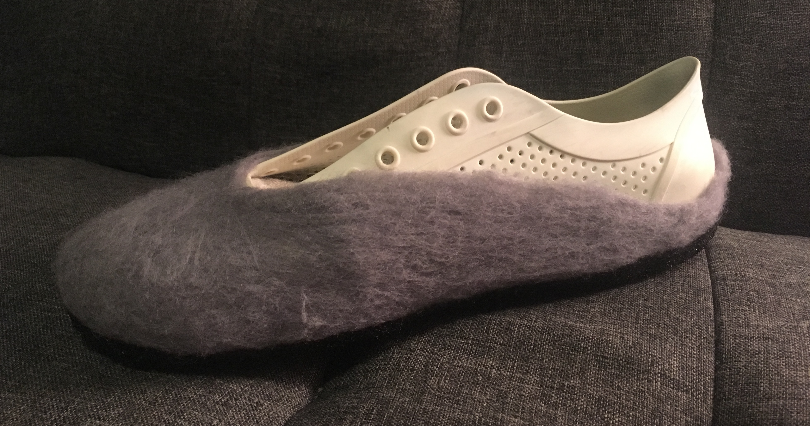
I thought iteration 3, just didn't work well becasue of lack of dillegnce, so I tried a version 4 with a similar approach. It looks nicer!
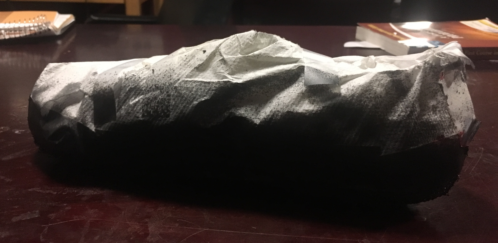
Covered the wool to plastidip a grip.
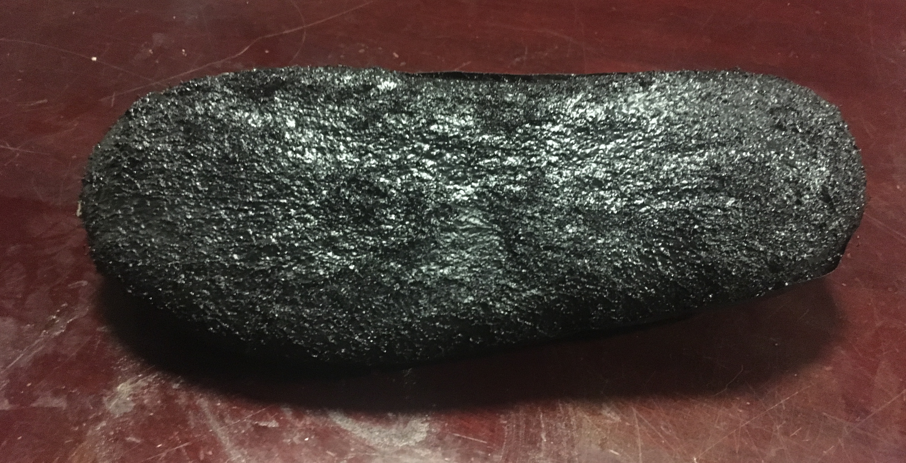
I did several more layers on this version that on the previous ones.
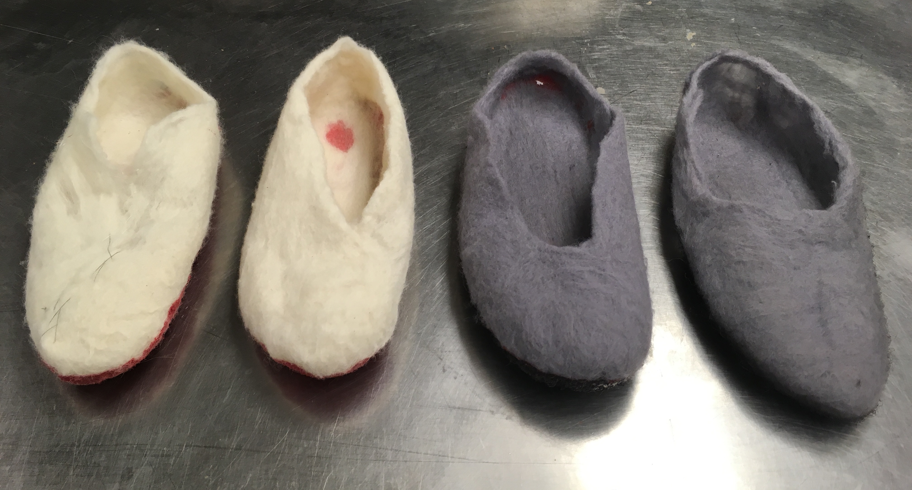
In the end, this was the line up. The fourth iteration ending up being totally out of proportion in most areas with regard to a foot, even though it did look nice. My takeaway is that likely something in the dying proccess of the gray wool makes it less workable for wet felting, because just generally it was much more a mess and effort than the wool with its natural-ish color. I think shoe #2 was my best one. It fit a foot, had a nice grip, and was super soft!
All in all, I learned a whole lot. Maybe I did not make the most amazing looking slipper ever, but I got what I wanted from this project. Making something low fidality pretty much from scratch was awesome, and I hope to continue my slipper making practice until I end up with a pair I'm happy with.
{kind=link}
{kind=link}